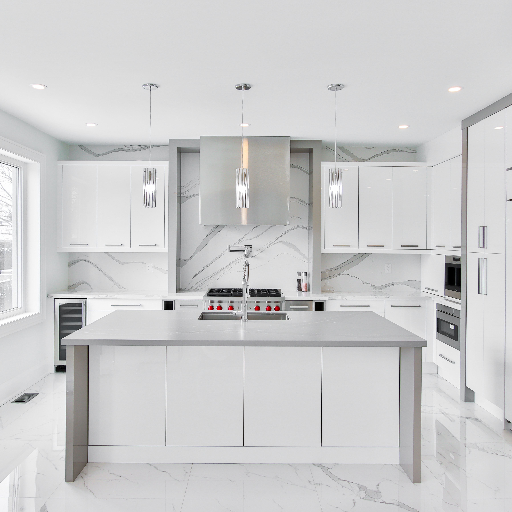
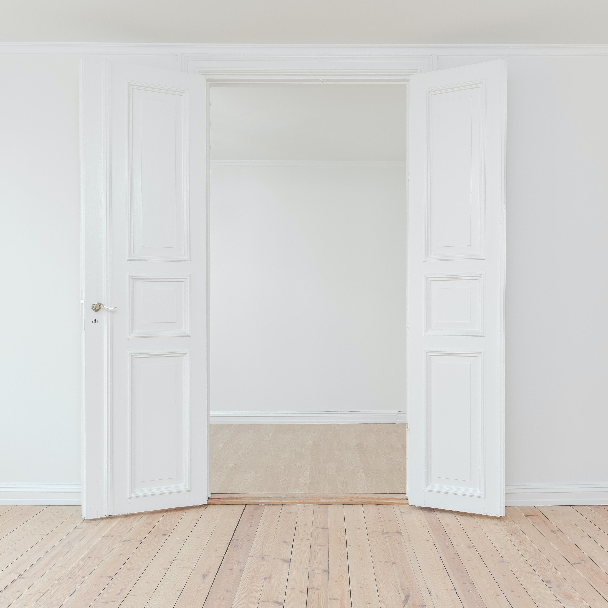
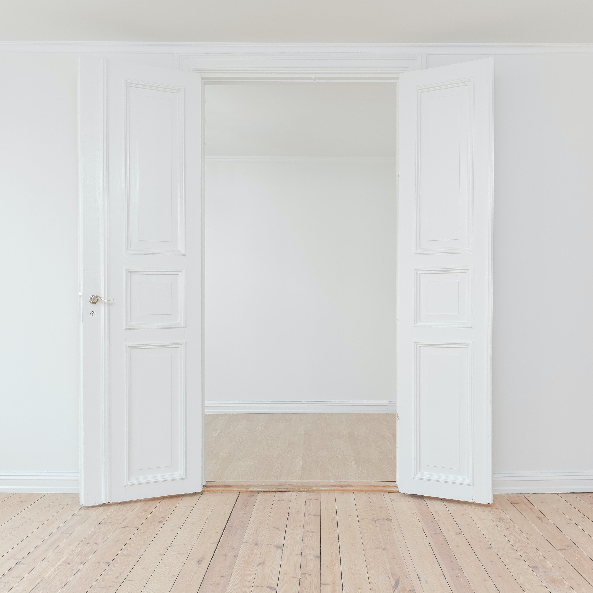

Tema 02
Grundlæggende web
I Tema 02 lærte vi at opsætte en responsiv website i HTML og CSS. Her skulle vi udarbejde en website ud fra den tildelte stilart. Jeg fik tildelt stilarten Minimalisme, som er kendt for udtrykket "less is more".
Processen
Tema 02 - Grundlæggenede web var et forløb på 4 uger. her indgik både gruppe og individuelt arbejde. Første del af forløbet foregik i gruppe arbejde og anden del individuelt. under disse 4 uger lærte vi at arbejde i programmer som Adobe XD, Photoshop, HTML og CSS.
- Gruppearbejde - Research og skrivearbejde
- Individuelt - Design og programmering
Research og skrivearbejde
Research og skrivearbejde delen gik ud på at vi i grupper fik til delt en stilart som man skulle præsentere for resten af klassen. Min gruppe og jeg fik til delt stilarten ”minimalismen” som var den stil vi skulle arbejde med igennem resten af temaet. Vi blev her introduceret til at udarbejde et moodboard og styletile som repræsenteret den tildelte stilart.
Et moodboard er et af det første visuelle steps i processen. Det bruges til at indsamle inspiration. Her samles en masse billeder, fonte og farver ud fra det emne der arbejdes med, i dette tilfælde minimalisme.
Ved udarbejdelse af styletile, skulle vi finde en hjemmeside med et minimalistisk design og udarbejde et styletile udfra. Her indsamler man hjemmesidens farvepalette, fonte, billeder og elementer.
Design og programmering
I design og programmering processen skulle vi starte med at udarbejde et mockup ud fra et tildelt wireframe. Vi måtte selv udvælge billeder, farver og fonte så længe det var tilpasset stilarten.
 

Et wireframe er et layout over dit website du er i gang med at udarbejde og viser os hvordan vores HTML kode skal se ud.
Mockup er det næste step i processen. Det er en skites over hvordan vi ønsker vores endelige website skal se ud. Et mock up indholder de farver, teskter, billeder og elementer som ønskes på siden. Det skaber et mere visuelt billede af hvordan slut relsutatet vil se ud.
Splashbillede og Icon/fav-icon
Websites skulle også indeholde et splashbillede samt et icon/fav-icon. Splashbillede skulle udarbejdes i Photos shop og skulle beskæres så billede passede til et responsiv site. Her var jeg igennem lidt forskellige ideer før jeg fandt frem til det endelig splashbillede. Jeg søgte inspiration på nettet i forhold til splashbillede.

I min proces i forhold til udarbejdelse af icon/fav.icon til website brugte jeg igen nettet og appstore til at søge inspirationen fra boligsider og se på deres valg af ikon. Da jeg havde fået en nogenlunde ide om hvad jeg ønskede gik jeg igang med at skitser en masse forskellige udgaver i hånden. Da jeg var kommet frem til det endelig icon rentegnede jeg det i Adobe XD.
HTML og CSS
Da vi havde designprocessen færdig var vi klar til at kode selve hjemmesiden i HMTL og CSS. Her fik vi udleveret et layoutdiagram som siderne skulle opsættes efter. Da hjemmeside skulle være responsive var det vigtigt at hjemmesiden så optimal ud på de forskellige devices.
Link til website